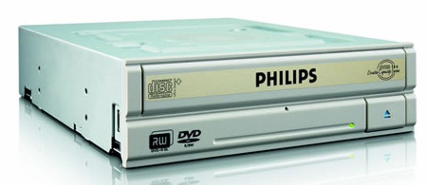
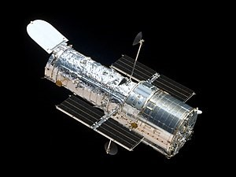

1980-1985
-
Avanços tecnológicos:
- 1985: Phillips inventa CD-ROM.

- 1990: Telescópio Hubble é lançado

- Filmes/desenhos/séries:
- 1986: Alf, o ETeimoso é uma série sobre um alienígena que vive com uma
família de terráqueos.
- Músicas de sucesso:
- 1986: Ira! - Flores em você
- Acontecimentos diversos:
- 1986: criado no Brasil o Plano Cruzado (plano econômico do governo Sarney
que visava reduzir a inflação com tabelamento de preços).